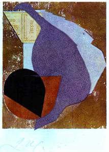
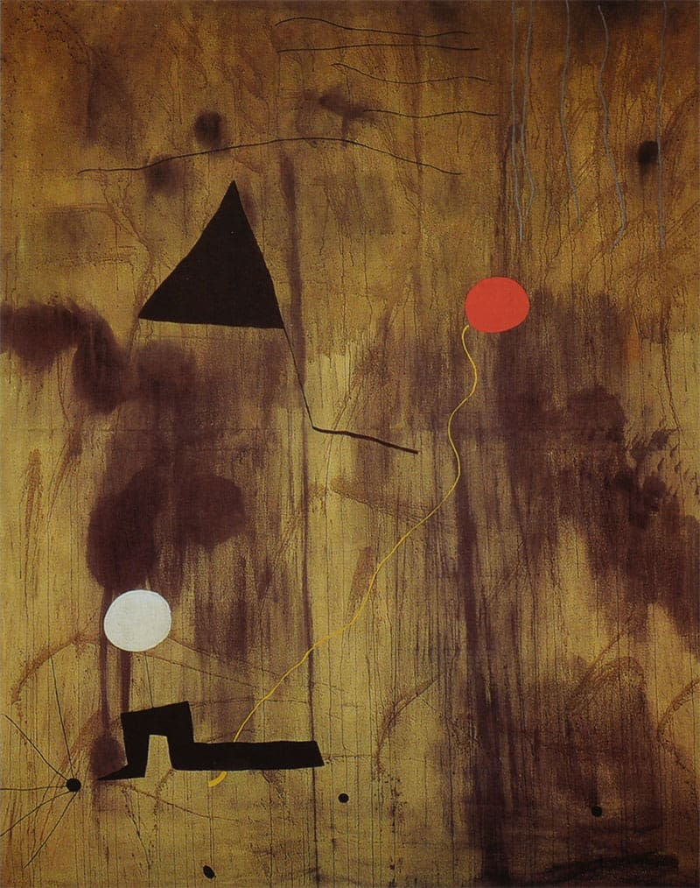

Galería


Obras destacadas del mes

Una obra que explora los misterios del origen y la existencia antes de la vida consciente.

Joan Miró (1925) utiliza formas abstractas y colores primarios para representar el caos primigenio del universo.